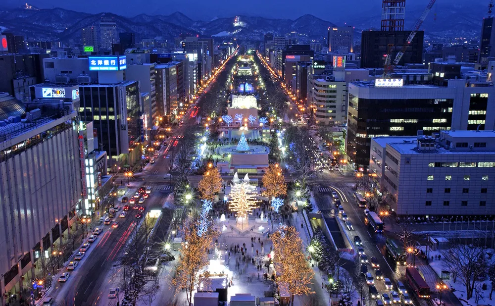

삿포로 눈 축제 사진
삿포로 눈 축제(さっぽろ雪まつり)
대륙
아시아
국가
일본
지역
홋카이도 삿포로시
장소
삿포로시
시기
매년 2월 초
https://www.sapporo.travel/ko/ 삿포로 공식 관광 한국어 사이트
삿포로 눈 축제는 일본 홋카이도 삿포로시에서 매년 2월 초에 열리는 겨울 축제로서 현지에서는 '삿포로 유키마쓰리(さっぽろ雪まつり)'라고 불립니다. 브라질 리우데자네이루의 리우 카니발과 독일의 옥토버페스트와 함께 세계 3대 축제라 불립니다. 이 축제는 1950년에 지역 중·고등학생들이 미술 교사의 지도 아래 눈으로 만든 조각 6개를 오도리 공원에 전시한 데서 시작되었습니다. 지금은 해마다 국내외에서 약 200만 명 이상이 찾는 삿포로 최대의 겨울 행사로 성장하였으며, 2026년 제 76회 축제에는 약 254만 명이 다녀갔습니다. 메인 행사장인 오도리 공원에는 약1.5km 구간에 걸쳐 세계 각국의 명소나, 캐릭터 등을 본떠 만든 크고 작은 눈,얼음 조각상들이 늘어섭니다. 해가지면 22시까지 조명이 켜지면 신비롭고 낭만적인 분위기를 자아냅니다. 또한 세계 각국의 팀이 참가하는 '국제 눈조각 콩쿠르'에서는 행사 기간 중에 작품 제작 과정도 직접 볼 수 있습니다. 이 밖에도 얼음 조각을 볼 수 있는 스스키노 행사장과 눈 미끄럼틀 등 체험 행사가 열리는 쓰도무 행사장이 있어, 삿포로 눈 축제에서 겨울의 다양한 매력을 즐길 수 있습니다.